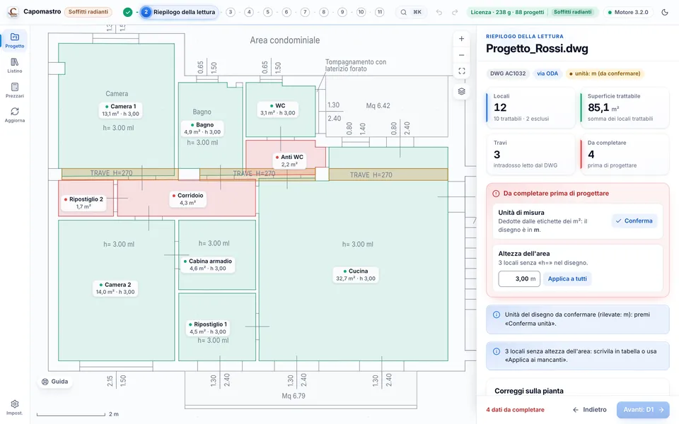
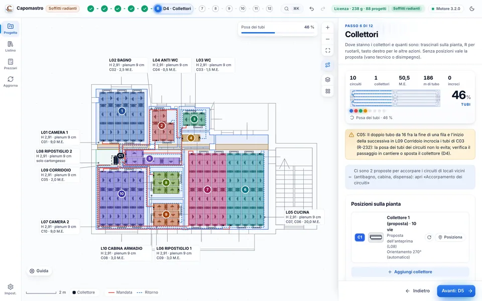

Scarica Capomastro
Windows 10/11 a 64 bit · macOS 14.4 o successivo · prova gratuita di 3 giorni o 2 progetti
Nuovo Modulo Cartongesso · pareti, contropareti e controsoffitti
Dal disegno dell’architetto al progetto finito.
Capomastro legge il disegno, progetta struttura e moduli, dimensiona i circuiti a ritorno inverso e prepara tavole, preventivo e computo. Con il Modulo Cartongesso fa lo stesso per pareti, contropareti e controsoffitti. Tutto sul tuo computer, in pochi minuti.
Scarica Capomastro
Riconosco il tuo sistema e ti propongo il programma giusto.
Ultima versioneProva gratuita: 3 giorni o 2 progetti, tutte le funzioni
D4 · Collettori · Progetto_Rossi.dwg
11circuiti a ritorno inverso
76moduli posati
0incroci fra i tubi
54,7m² di superficie attiva
Strutturamodulicircuiti a ritorno inversocollettoricentraleregolazionetavole A1preventivocomputoStrutturamodulicircuiti a ritorno inversocollettoricentrale
da 49 €al mese con la licenza di un anno, IVA esclusa
Due moduli
Un programma, due modi di progettare.
Ogni modulo ha il suo percorso guidato, i suoi elaborati e la sua licenza. Se hai tutti e due, scegli all'avvio quale usare e puoi passare dall'uno all'altro con lo stesso disegno.
01
Modulo 01
Soffitti radianti
Dal DWG dell'architetto a struttura, moduli, circuiti a ritorno inverso, collettori, centrale e regolazione: tavole A1, preventivo e computo.
Superficie attiva e copertura sempre in vista, circuiti e collettori senza incroci: lo vedi sulla pianta mentre lavori.
Pareti, contropareti e controsoffitti disegnati sulla pianta o dai lati di un locale; orditura, lastre e viti dai dati del produttore, con edizione e fonte. Tavole CG-01…CG-03, preventivo e computo.
Un precontrollo a tre stati sui dati documentati, mai un «conforme»: la verifica strutturale resta del progettista.
Rispondi a poche domande: il programma progetta, tu controlli e correggi sulla pianta. Ogni modifica si annulla con un tasto.
Lettura
D1
D2
D3
Pannelli
D4
D5
D6
D7
D8
Anteprima
Genera
Passo 1 di 12Lettura
1Lettura
Legge il DWG dell'architetto
Locali, superfici, altezze, travi e aree NO RADIUS riconosciuti da soli, anche su più piani. Quello che manca lo completi sulla pianta, con un clic.
DWG e DXF, con ODA File Converter installato dal programma
Unità di misura e altezze controllate prima di progettare
Il disegno originale resta intatto
Riepilogo della lettura · Progetto_Rossi.dwg

2Pannelli
Posa struttura e moduli
Moduli radianti nei formati da 240, 120 e 86 posati locale per locale, con l'orientamento migliore e le file allineate; struttura con portanti, giunti e scavalchi delle travi.
Superficie attiva e copertura sempre in vista
Orientamento per locale, automatico o scelto da te
Moduli, collettori e accessori dalla tua libreria di blocchi
Pannelli · Posa e orientamento
3Collettori
Circuiti e collettori, senza incroci
Circuiti a ritorno inverso numerati a ventaglio dal collettore, tubi a fascio ordinato. Sposti un collettore e i tubi si ricalcolano in sottofondo, mentre continui a lavorare.
Mandata rossa, ritorno blu tratteggiato, come nelle tavole
Portata e lunghezza di ogni circuito sotto controllo
Calcolo in un processo separato: la pianta resta fluida
D4 · Collettori

4Centrale
Centrale, linea primaria e colonne
Posizioni pompa di calore, accumulo e gruppo di rilancio, tracci la linea primaria a soffitto o a pavimento; poi il dimensionamento delle colonne come il foglio «COLONNE RA», con lo schema della rete in 3D e le curve delle pompe.
Linea primaria con i nodi, tracciata sulla pianta
Diametri, portate, velocità e perdite di carico spiegati
Gruppo di rilancio e accumulo fra i modelli adatti
D5 · Centrale e linea primaria
5Elaborati
Elaborati pronti, stampa per squadra
DWG e DXF dell'impianto con le tavole, preventivo e studio di fattibilità in PDF per il cliente, computo Excel con le formule. Stampi dalla A0 alla A4 le tavole che servono a ogni squadra.
Tavole per gruppi di layer, con cartiglio e legenda
Preventivo che vende: sintesi, piante e totali
Prezzi dal tuo listino e dal prezzario della tua regione
Stampa elaborati grafici
Fatto per lavorare
Le funzioni che fanno la differenza.
Il percorso più breve, e lo confermi tu
I tubi cercano il percorso più breve che il disegno consente; dove non si può, il programma lo segnala e ogni tratto particolare lo confermi tu.
Salvi ovunque, riparti da dove eri
Il lavoro si salva in qualsiasi passo e ogni modifica si annulla con un tasto: provi, correggi, torni indietro.
Solo prezzi veri
Il tuo listino e i prezzari regionali, con fonte e data: mai un numero inventato.
Tutto sul tuo computer
Disegni e progetti restano nel tuo studio, e il disegno dell'architetto non si tocca.
Si aggiorna da solo
Programma, ODA File Converter e prezzario: aggiornamenti firmati, con internet solo per gli aggiornamenti e per l'elenco dei video.
Video tutorial
Guarda come si fa, un passo alla volta.
Un tutorial completo per ogni modulo, sul progetto d'esempio «Mario Rossi», e sotto un video breve per ogni novità importante. Scegli il modulo e salta al capitolo che ti serve: un clic sul capitolo porta il video a quel punto.
Carico i tutorial…
Novità · Soffitti radianti
Le ultime novità, un video alla volta.
Quando arriva una funzione importante c'è un video breve, dal più recente. Un clic lo porta nel lettore qui sopra, con i suoi capitoli.
Novità della 3.0
Un programma, due moduli.
Il modulo Soffitti radianti è quello che conosci: regole, calcoli, prezzi ed elaborati non cambiano. Arriva il Cartongesso, con il suo percorso in otto passi. Chi ha già il programma si aggiorna da solo e ritrova licenza, listini e progetti.
Modulo Cartongesso
Pareti, contropareti e controsoffitti disegnati sulla pianta o dai lati di un locale; orditura, lastre e viti dai dati del produttore, con edizione e fonte.
Mai un «conforme»
Un precontrollo a tre stati sui dati documentati: compatibile, incompatibile o non verificabile, con la causa e il rimedio. La verifica strutturale resta del progettista.
Tavole e preventivo
Le tavole A1 CG-01, CG-02 e CG-03, il preventivo per il cliente senza prezzi unitari e il computo in Excel con le formule.
Due moduli, una licenza per ciascuno
Scegli il modulo all'avvio e passa all'altro con lo stesso disegno. Ogni licenza vale per un modulo: prendi solo quello che ti serve.
Prezzi dal prezzario, con la tua conferma
Ogni voce viene dal prezzario della tua regione, da una tua conferma o da un prezzo scritto da te con fonte e data. Gli oneri della sicurezza li dichiari tu.
Capomastro, con una C nuova
Nome e icona nuovi: la C in rame che nasce dal serpentino di un modulo radiante.
Video tutorial
Un tutorial completo per ogni modulo, con i capitoli: guardi quello che ti serve, quando ti serve.
Manuale e standard aggiornati
Il manuale ha il capitolo del Cartongesso e c'è lo standard per l'architetto anche per il Cartongesso: il disegno arriva già pronto.
Licenze
Una licenza per ogni modulo.
Prima provi gratis, poi scegli. Ogni modulo ha la sua licenza, per un computer e per un numero di progetti: un progetto è un disegno diverso, e rigenerarlo non conta.
3 giorni o 2 progettidi prova gratuita, con tutte le funzioni
Aggiornamentisempre inclusi, in ogni licenza
1 h di formazionein videochiamata, con la simulazione di un progetto
Help Deskore incluse nei piani più lunghi, poi 25 €/h
−30 %sul secondo computer dello stesso studio
01
Modulo 01
Modulo Soffitti radianti
Soffitti radianti a moduli: dal DWG dell'architetto a struttura, moduli, circuiti, elaborati e preventivo.
Formazione: 1 h di formazione generale all'uso, in videochiamata, con la simulazione della creazione di un progetto.
Help Desk: oltre le ore comprese 25 €/h.
Secondo computer dello stesso studio: −30 %. Prezzi IVA esclusa. Licenza legata al computer; internet serve solo per gli aggiornamenti e per l'elenco dei video.
Capomastro è uno strumento di supporto: propone e segnala, il progettista decide e verifica. Le scelte e le conferme del progettista, e i risultati che ne derivano, restano sotto la sua responsabilità, come stabilisce il contratto di licenza.
InstallaUn solo setup per Windows, con ODA File Converter; sul Mac un dmg.
Prova o attivaScegli la prova gratuita oppure invia il codice dispositivo che il programma ti mostra.
Ricevi la chiaveIncollala nel programma e lavora: la licenza resta sul tuo computer.
Un solo file da scaricare. Internet serve solo per gli aggiornamenti e per l'elenco dei video: il resto funziona offline.
Il tuo sistema
Windows
Windows 10 o 11 a 64 bit · file radius-project_install.exe
Apri il file scaricato. Se il browser avvisa che il file non viene scaricato spesso, scegli Mantieni.
Se compare «Windows ha protetto il PC», premi Ulteriori informazioni → Esegui comunque: il programma non ha ancora la firma digitale.
Lascia spuntato Scarica e installa ODA File Converter (serve per leggere i DWG; Windows chiede una conferma).
Al primo avvio scegli la prova gratuita oppure attiva la licenza con il codice dispositivo; poi indica la tua regione per il prezzario.
Il tuo sistema
Mac
macOS 14.4 (Sonoma) o successivo, Intel e chip Apple · file radius-project_mac.dmg
Apri il file scaricato e trascina l'app nella cartella Applicazioni.
Al primo avvio il Mac avvisa che l'app è di uno sviluppatore non identificato: premi Fine, apri Impostazioni di Sistema → Privacy e sicurezza e in fondo premi Apri comunque. Serve una volta sola.
Sui Mac con chip Apple, se il Mac lo chiede, installa Rosetta.
Scegli la prova gratuita oppure attiva la licenza con il codice dispositivo, poi in Aggiornamenti → ODA File Converter premi Aggiorna: il programma lo installa da solo, senza password.
Chi ha già il programma non deve scaricare niente: gli aggiornamenti arrivano da soli.